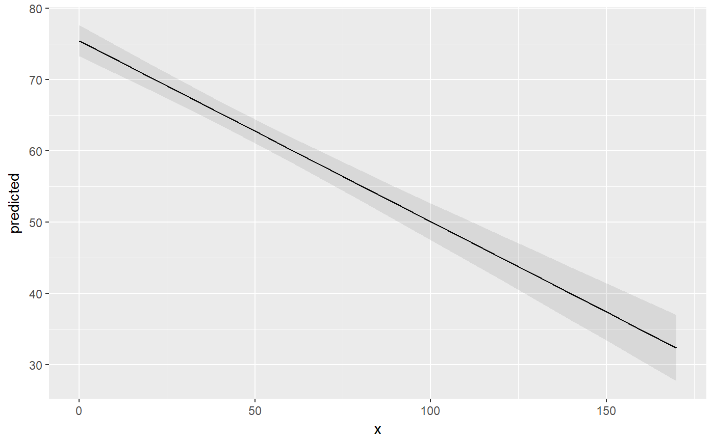
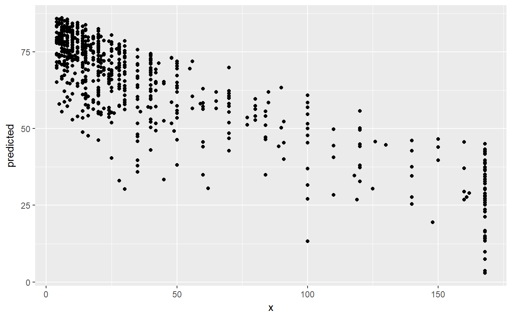
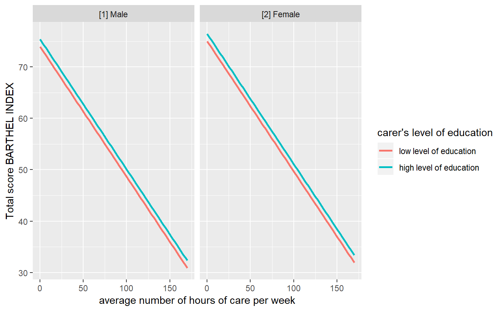
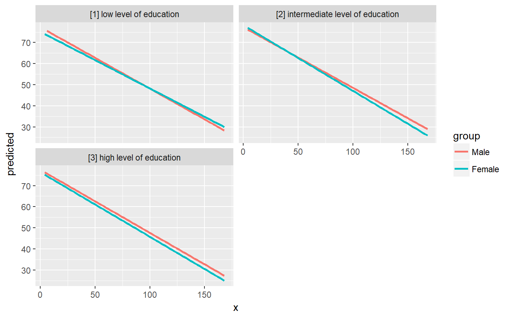
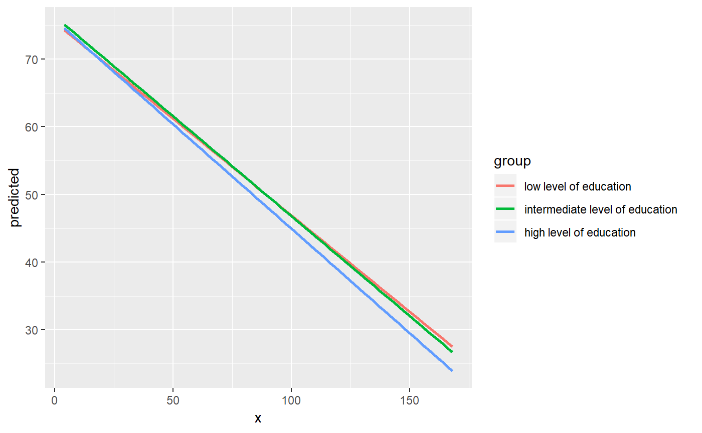
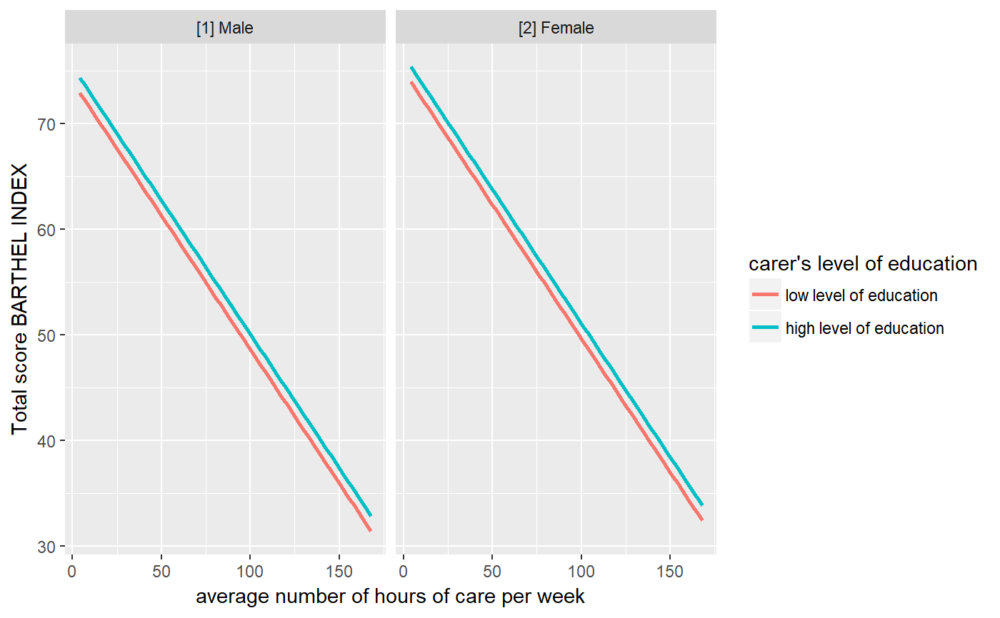

R/ggeffect.R, R/ggemmeans.R, R/ggpredict.R
ggpredict.RdThe ggeffects package computes estimated marginal means (predicted values) for the
response, at the margin of specific values or levels from certain model terms,
i.e. it generates predictions by a model by holding the non-focal variables
constant and varying the focal variable(s).
ggpredict() uses predict() for generating predictions,
while ggeffect() computes marginal effects by internally calling
Effect and ggemmeans() uses emmeans.
The result is returned as consistent data frame.
ggeffect(model, terms, ci.lvl = 0.95, ...) ggemmeans( model, terms, ci.lvl = 0.95, type = "fe", typical = "mean", condition = NULL, back.transform = TRUE, ... ) ggpredict( model, terms, ci.lvl = 0.95, type = "fe", typical = "mean", condition = NULL, back.transform = TRUE, ppd = FALSE, vcov.fun = NULL, vcov.type = NULL, vcov.args = NULL, interval = "confidence", ... )
| model | A fitted model object, or a list of model objects. Any model
that supports common methods like |
|---|---|
| terms | Character vector (or a formula) with the names of those terms
from |
| ci.lvl | Numeric, the level of the confidence intervals. For |
| ... | For |
| type | Character, only applies for survival models, mixed effects models
and/or models with zero-inflation. Note: For "fe" (or "fixed" or "count")Predicted values are conditioned on the fixed effects or conditional
model only (for mixed models: predicted values are on the population-level
and confidence intervals are returned). For instance, for models
fitted with "re" (or "random")This only applies to mixed models, and "fe.zi" (or "zero_inflated" or "zi")Predicted values are conditioned on the fixed effects and the zero-inflation
component. For instance, for models fitted with "re.zi" (or "zi_random" or "zero_inflated_random")Predicted values are conditioned on the zero-inflation component and
take the random effects uncertainty into account. For models fitted with
"sim"Predicted values and confidence resp. prediction intervals are
based on simulations, i.e. calls to "surv" and "cumhaz" (or "survival" and "cumulative_hazard")Applies only to |
| typical | Character vector, naming the function to be applied to the
covariates over which the effect is "averaged". The default is "mean".
See |
| condition | Named character vector, which indicates covariates that
should be held constant at specific values. Unlike |
| back.transform | Logical, if |
| ppd | Logical, if |
| vcov.fun | String, indicating the name of the |
| vcov.type | Character vector, specifying the estimation type for the
robust covariance matrix estimation (see |
| vcov.args | List of named vectors, used as additional arguments that
are passed down to |
| interval | Type of interval calculation, can either be |
A data frame (with ggeffects class attribute) with consistent
data columns:
xthe values of the first term in terms, used as x-position in plots.
predictedthe predicted values of the response, used as y-position in plots.
std.errorthe standard error of the predictions.
conf.lowthe lower bound of the confidence interval for the predicted values.
conf.highthe upper bound of the confidence interval for the predicted values.
groupthe grouping level from the second term in terms, used as grouping-aesthetics in plots.
facetthe grouping level from the third term in terms, used to indicate facets in plots.
The estimated marginal means (predicted values) are always on the
response scale!
For proportional odds logistic regression (see polr)
resp. cumulative link models (e.g., see clm),
an additional column response.level is returned, which indicates
the grouping of predictions based on the level of the model's response.
Note that for convenience reasons, the columns for the intervals
are always named conf.low and conf.high, even though
for Bayesian models credible or highest posterior density intervals
are returned.
A list of supported models can be found at https://github.com/strengejacke/ggeffects.
Support for models varies by function, i.e. although ggpredict(),
ggemmeans() and ggeffect() support most models, some models
are only supported exclusively by one of the three functions.
ggpredict() and ggeffect() or ggemmeans()ggpredict() calls predict(), while ggeffect()
calls Effect and ggemmeans() calls
emmeans to compute marginal effects. Therefore,
ggpredict() and ggeffect() resp. ggemmeans() differ in
how factors are held constant: ggpredict() uses the reference level, while
ggeffect() and ggemmeans() compute a kind of "average" value,
which represents the proportions of each factor's category. Use condition
to set a specific level for factors in ggemmeans(), so factors are
not averaged over their categories, but held constant at a given level.
Specific values of model terms can be specified via the terms-argument.
Indicating levels in square brackets allows for selecting only
specific groups or values resp. value ranges. Term name and the start of
the levels in brackets must be separated by a whitespace character, e.g.
terms = c("age", "education [1,3]"). Numeric ranges, separated
with colon, are also allowed: terms = c("education", "age [30:60]").
The terms-argument also supports the same shortcuts as the
values-argument in values_at(). So
terms = "age [meansd]" would return predictions for the values
one standard deviation below the mean age, the mean age and
one SD above the mean age. terms = "age [quart2]" would calculate
predictions at the value of the lower, median and upper quartile of age.
Furthermore, it is possible to specify a function name. Values for
predictions will then be transformed, e.g. terms = "income [exp]".
This is useful when model predictors were transformed for fitting the
model and should be back-transformed to the original scale for predictions.
It is also possible to define own functions (see
this vignette).
You can take a random sample of any size with sample=n, e.g
terms = "income [sample=8]", which will sample eight values from
all possible values of the variable income. This option is especially
useful for plotting marginal effects at certain levels of random effects
group levels, where the group factor has many levels that can be completely
plotted. For more details, see this vignette.
Finally, numeric vectors for which no specific values are given, a
"pretty range" is calculated (see pretty_range), to avoid
memory allocation problems for vectors with many unique values. If a numeric
vector is specified as second or third term (i.e. if this vector represents
a grouping structure), representative values (see values_at)
are chosen (unless other values are specified). If all values for a numeric
vector should be used to compute predictions, you may use e.g.
terms = "age [all]". See also package vignettes.
To create a pretty range that should be smaller or larger than the default
range (i.e. if no specific values would be given), use the n-tag,
e.g. terms="age [n=5]" or terms="age [n=12]". Larger
values for n return a larger range of predicted values.
For ggpredict(), expand.grid() is called on all unique
combinations of model.frame(model)[, terms] and used as
newdata-argument for predict(). In this case,
all remaining covariates that are not specified in terms are
held constant: Numeric values are set to the mean (unless changed with
the condition or typical-argument), factors are set to their
reference level (may also be changed with condition) and character
vectors to their mode (most common element).
ggeffect() and ggemmeans(), by default, set remaining numeric
covariates to their mean value, while for factors, a kind of "average" value,
which represents the proportions of each factor's category, is used. For
ggemmeans(), use condition to set a specific level for
factors so that these are not averaged over their categories, but held
constant at the given level.
ggpredict() also works with Stan-models from
the rstanarm or brms-package. The predicted
values are the median value of all drawn posterior samples. The
confidence intervals for Stan-models are Bayesian predictive intervals.
By default (i.e. ppd = FALSE), the predictions are based on
posterior_linpred and hence have some
limitations: the uncertainty of the error term is not taken into
account. The recommendation is to use the posterior predictive
distribution (posterior_predict).
Models of class brmsfit always condition on the zero-inflation
component, if the model has such a component. Hence, there is no
type = "fe.zi" nor type = "re.zi" for brmsfit-models,
because predictions are based on draws of the posterior distribution,
which already account for the zero-inflation part of the model.
If model is of class glmmTMB, hurdle, zeroinfl
or zerotrunc, simulations from a multivariate normal distribution
(see mvrnorm) are drawn to calculate mu*(1-p).
Confidence intervals are then based on quantiles of these results. For
type = "re.zi", prediction intervals also take the uncertainty in
the random-effect paramters into account (see also Brooks et al. 2017,
pp.391-392 for details).
An alternative for models fitted with glmmTMB that take all model
uncertainties into account are simulations based on simulate(), which
is used when type = "sim" (see Brooks et al. 2017, pp.392-393 for
details).
Predicted values for the fixed effects component (type = "fe" or
type = "fe.zi") are based on predict(..., type = "mean_subject"),
while predicted values for random effects components (type = "re" or
type = "re.zi") are calculated with predict(..., type = "subject_specific")
(see ?GLMMadaptive::predict.MixMod for details). The latter option
requires the response variable to be defined in the newdata-argument
of predict(), which will be set to its typical value (see
typical_value).
polr-, clm-models, or more generally speaking, models with
ordinal or multinominal outcomes, have an additional column
response.level, which indicates with which level of the response
variable the predicted values are associated.
The print()-method gives a clean output (especially for predictions
by groups), and indicates at which values covariates were held constant.
Furthermore, the print()-method has the arguments digits and
n to control number of decimals and lines to be printed, and an
argument x.lab to print factor-levels instead of numeric values
if x is a factor.
The support for some models, for example from package MCMCglmm, is rather experimental and may fail for certain models. If you encounter any errors, please file an issue at https://github.com/strengejacke/ggeffects/issues.
Brooks ME, Kristensen K, Benthem KJ van, Magnusson A, Berg CW, Nielsen A, et al. glmmTMB Balances Speed and Flexibility Among Packages for Zero-inflated Generalized Linear Mixed Modeling. The R Journal. 2017;9: 378-400.
Johnson PC, O'Hara RB. 2014. Extension of Nakagawa & Schielzeth's R2GLMM to random slopes models. Methods Ecol Evol, 5: 944-946. (doi: 10.1111/2041-210X.12225 )
library(sjlabelled) data(efc) fit <- lm(barthtot ~ c12hour + neg_c_7 + c161sex + c172code, data = efc) ggpredict(fit, terms = "c12hour")#> #> # Predicted values of Total score BARTHEL INDEX #> # x = average number of hours of care per week #> #> x | Predicted | SE | 95% CI #> --------------------------------------- #> 0 | 75.44 | 1.12 | [73.26, 77.63] #> 20 | 70.38 | 0.93 | [68.56, 72.19] #> 45 | 64.05 | 0.84 | [62.39, 65.70] #> 65 | 58.98 | 0.93 | [57.16, 60.80] #> 85 | 53.91 | 1.12 | [51.71, 56.11] #> 105 | 48.85 | 1.38 | [46.15, 51.55] #> 125 | 43.78 | 1.67 | [40.52, 47.05] #> 170 | 32.38 | 2.37 | [27.73, 37.03] #> #> Adjusted for: #> * neg_c_7 = 11.84 #> * c161sex = 1.76 #> * c172code = 1.97 #>#> #> # Predicted values of Total score BARTHEL INDEX #> # x = average number of hours of care per week #> #> # c172code = low level of education #> #> x | Predicted | SE | 95% CI #> --------------------------------------- #> 0 | 74.75 | 1.78 | [71.27, 78.23] #> 30 | 67.15 | 1.59 | [64.04, 70.26] #> 55 | 60.81 | 1.55 | [57.78, 63.85] #> 85 | 53.22 | 1.66 | [49.96, 56.47] #> 115 | 45.62 | 1.91 | [41.87, 49.37] #> 170 | 31.69 | 2.59 | [26.60, 36.77] #> #> # c172code = intermediate level of education #> #> x | Predicted | SE | 95% CI #> --------------------------------------- #> 0 | 75.46 | 1.11 | [73.28, 77.65] #> 30 | 67.87 | 0.87 | [66.17, 69.57] #> 55 | 61.53 | 0.87 | [59.82, 63.24] #> 85 | 53.93 | 1.13 | [51.73, 56.14] #> 115 | 46.34 | 1.52 | [43.35, 49.32] #> 170 | 32.40 | 2.38 | [27.75, 37.06] #> #> # c172code = high level of education #> #> x | Predicted | SE | 95% CI #> --------------------------------------- #> 0 | 76.18 | 1.72 | [72.82, 79.55] #> 30 | 68.58 | 1.62 | [65.42, 71.75] #> 55 | 62.25 | 1.66 | [59.01, 65.50] #> 85 | 54.65 | 1.84 | [51.04, 58.26] #> 115 | 47.05 | 2.14 | [42.85, 51.25] #> 170 | 33.12 | 2.86 | [27.51, 38.73] #> #> Adjusted for: #> * neg_c_7 = 11.84 #> * c161sex = 1.76 #>#> #> # Predicted values of Total score BARTHEL INDEX #> # x = average number of hours of care per week #> #> # c172code = low level of education #> # c161sex = [1] Male #> #> x | Predicted | SE | 95% CI #> --------------------------------------- #> 0 | 73.95 | 2.35 | [69.35, 78.55] #> 45 | 62.56 | 2.21 | [58.23, 66.88] #> 85 | 52.42 | 2.31 | [47.90, 56.95] #> 170 | 30.89 | 3.08 | [24.85, 36.94] #> #> # c172code = intermediate level of education #> # c161sex = [1] Male #> #> x | Predicted | SE | 95% CI #> --------------------------------------- #> 0 | 74.67 | 1.85 | [71.06, 78.29] #> 45 | 63.27 | 1.73 | [59.88, 66.66] #> 85 | 53.14 | 1.91 | [49.40, 56.89] #> 170 | 31.61 | 2.87 | [25.98, 37.24] #> #> # c172code = high level of education #> # c161sex = [1] Male #> #> x | Predicted | SE | 95% CI #> --------------------------------------- #> 0 | 75.39 | 2.22 | [71.04, 79.74] #> 45 | 63.99 | 2.18 | [59.73, 68.26] #> 85 | 53.86 | 2.36 | [49.23, 58.49] #> 170 | 32.33 | 3.26 | [25.95, 38.71] #> #> # c172code = low level of education #> # c161sex = [2] Female #> #> x | Predicted | SE | 95% CI #> --------------------------------------- #> 0 | 75.00 | 1.83 | [71.41, 78.59] #> 45 | 63.60 | 1.60 | [60.46, 66.74] #> 85 | 53.46 | 1.70 | [50.13, 56.80] #> 170 | 31.93 | 2.61 | [26.83, 37.04] #> #> # c172code = intermediate level of education #> # c161sex = [2] Female #> #> x | Predicted | SE | 95% CI #> --------------------------------------- #> 0 | 75.71 | 1.23 | [73.31, 78.12] #> 45 | 64.32 | 0.97 | [62.42, 66.21] #> 85 | 54.18 | 1.21 | [51.81, 56.55] #> 170 | 32.65 | 2.40 | [27.94, 37.36] #> #> # c172code = high level of education #> # c161sex = [2] Female #> #> x | Predicted | SE | 95% CI #> --------------------------------------- #> 0 | 76.43 | 1.81 | [72.89, 79.98] #> 45 | 65.03 | 1.71 | [61.68, 68.39] #> 85 | 54.90 | 1.91 | [51.16, 58.65] #> 170 | 33.37 | 2.89 | [27.70, 39.05] #> #> Adjusted for: #> * neg_c_7 = 11.84 #># specified as formula ggpredict(fit, terms = ~ c12hour + c172code + c161sex)#> #> # Predicted values of Total score BARTHEL INDEX #> # x = average number of hours of care per week #> #> # c172code = low level of education #> # c161sex = [1] Male #> #> x | Predicted | SE | 95% CI #> --------------------------------------- #> 0 | 73.95 | 2.35 | [69.35, 78.55] #> 45 | 62.56 | 2.21 | [58.23, 66.88] #> 85 | 52.42 | 2.31 | [47.90, 56.95] #> 170 | 30.89 | 3.08 | [24.85, 36.94] #> #> # c172code = intermediate level of education #> # c161sex = [1] Male #> #> x | Predicted | SE | 95% CI #> --------------------------------------- #> 0 | 74.67 | 1.85 | [71.06, 78.29] #> 45 | 63.27 | 1.73 | [59.88, 66.66] #> 85 | 53.14 | 1.91 | [49.40, 56.89] #> 170 | 31.61 | 2.87 | [25.98, 37.24] #> #> # c172code = high level of education #> # c161sex = [1] Male #> #> x | Predicted | SE | 95% CI #> --------------------------------------- #> 0 | 75.39 | 2.22 | [71.04, 79.74] #> 45 | 63.99 | 2.18 | [59.73, 68.26] #> 85 | 53.86 | 2.36 | [49.23, 58.49] #> 170 | 32.33 | 3.26 | [25.95, 38.71] #> #> # c172code = low level of education #> # c161sex = [2] Female #> #> x | Predicted | SE | 95% CI #> --------------------------------------- #> 0 | 75.00 | 1.83 | [71.41, 78.59] #> 45 | 63.60 | 1.60 | [60.46, 66.74] #> 85 | 53.46 | 1.70 | [50.13, 56.80] #> 170 | 31.93 | 2.61 | [26.83, 37.04] #> #> # c172code = intermediate level of education #> # c161sex = [2] Female #> #> x | Predicted | SE | 95% CI #> --------------------------------------- #> 0 | 75.71 | 1.23 | [73.31, 78.12] #> 45 | 64.32 | 0.97 | [62.42, 66.21] #> 85 | 54.18 | 1.21 | [51.81, 56.55] #> 170 | 32.65 | 2.40 | [27.94, 37.36] #> #> # c172code = high level of education #> # c161sex = [2] Female #> #> x | Predicted | SE | 95% CI #> --------------------------------------- #> 0 | 76.43 | 1.81 | [72.89, 79.98] #> 45 | 65.03 | 1.71 | [61.68, 68.39] #> 85 | 54.90 | 1.91 | [51.16, 58.65] #> 170 | 33.37 | 2.89 | [27.70, 39.05] #> #> Adjusted for: #> * neg_c_7 = 11.84 #># only range of 40 to 60 for variable 'c12hour' ggpredict(fit, terms = "c12hour [40:60]")#> #> # Predicted values of Total score BARTHEL INDEX #> # x = average number of hours of care per week #> #> x | Predicted | SE | 95% CI #> -------------------------------------- #> 40 | 65.31 | 0.84 | [63.66, 66.96] #> 43 | 64.55 | 0.84 | [62.90, 66.20] #> 45 | 64.05 | 0.84 | [62.39, 65.70] #> 47 | 63.54 | 0.85 | [61.88, 65.20] #> 50 | 62.78 | 0.85 | [61.11, 64.45] #> 53 | 62.02 | 0.86 | [60.33, 63.71] #> 55 | 61.51 | 0.87 | [59.81, 63.22] #> 60 | 60.25 | 0.90 | [58.49, 62.00] #> #> Adjusted for: #> * neg_c_7 = 11.84 #> * c161sex = 1.76 #> * c172code = 1.97 #># using "summary()" shows that covariate "neg_c_7" is held # constant at a value of 11.84 (its mean value). To use a # different value, use "condition" ggpredict(fit, terms = "c12hour [40:60]", condition = c(neg_c_7 = 20))#> #> # Predicted values of Total score BARTHEL INDEX #> # x = average number of hours of care per week #> #> x | Predicted | SE | 95% CI #> -------------------------------------- #> 40 | 46.56 | 2.03 | [42.58, 50.54] #> 43 | 45.80 | 2.02 | [41.85, 49.76] #> 45 | 45.30 | 2.01 | [41.35, 49.24] #> 47 | 44.79 | 2.00 | [40.86, 48.71] #> 50 | 44.03 | 1.99 | [40.12, 47.94] #> 53 | 43.27 | 1.99 | [39.38, 47.16] #> 55 | 42.76 | 1.98 | [38.88, 46.64] #> 60 | 41.50 | 1.97 | [37.63, 45.36] #> #> Adjusted for: #> * c161sex = 1.76 #> * c172code = 1.97 #># to plot ggeffects-objects, you can use the 'plot()'-function. # the following examples show how to build your ggplot by hand. # \donttest{ # plot predicted values, remaining covariates held constant library(ggplot2) mydf <- ggpredict(fit, terms = "c12hour") ggplot(mydf, aes(x, predicted)) + geom_line() + geom_ribbon(aes(ymin = conf.low, ymax = conf.high), alpha = .1)# three variables, so we can use facets and groups mydf <- ggpredict(fit, terms = c("c12hour", "c161sex", "c172code")) ggplot(mydf, aes(x = x, y = predicted, colour = group)) + stat_smooth(method = "lm", se = FALSE) + facet_wrap(~facet, ncol = 2)#># select specific levels for grouping terms mydf <- ggpredict(fit, terms = c("c12hour", "c172code [1,3]", "c161sex")) ggplot(mydf, aes(x = x, y = predicted, colour = group)) + stat_smooth(method = "lm", se = FALSE) + facet_wrap(~facet) + labs( y = get_y_title(mydf), x = get_x_title(mydf), colour = get_legend_title(mydf) )#># level indication also works for factors with non-numeric levels # and in combination with numeric levels for other variables data(efc) efc$c172code <- as_label(efc$c172code) fit <- lm(barthtot ~ c12hour + neg_c_7 + c161sex + c172code, data = efc) ggpredict(fit, terms = c("c12hour", "c172code [low level of education, high level of education]", "c161sex [1]"))#> #> # Predicted values of Total score BARTHEL INDEX #> # x = average number of hours of care per week #> #> # c172code = low level of education #> #> x | Predicted | SE | 95% CI #> --------------------------------------- #> 0 | 72.81 | 2.50 | [67.91, 77.71] #> 30 | 65.22 | 2.39 | [60.54, 69.89] #> 55 | 58.89 | 2.37 | [54.23, 63.54] #> 85 | 51.29 | 2.46 | [46.46, 56.12] #> 115 | 43.69 | 2.65 | [38.49, 48.89] #> 170 | 29.76 | 3.20 | [23.49, 36.04] #> #> # c172code = high level of education #> #> x | Predicted | SE | 95% CI #> --------------------------------------- #> 0 | 74.03 | 2.45 | [69.23, 78.83] #> 30 | 66.43 | 2.39 | [61.74, 71.12] #> 55 | 60.10 | 2.43 | [55.34, 64.87] #> 85 | 52.51 | 2.58 | [47.45, 57.56] #> 115 | 44.91 | 2.81 | [39.40, 50.42] #> 170 | 30.98 | 3.41 | [24.29, 37.67] #> #> Adjusted for: #> * neg_c_7 = 11.84 #># use categorical value on x-axis, use axis-labels, add error bars dat <- ggpredict(fit, terms = c("c172code", "c161sex")) ggplot(dat, aes(x, predicted, colour = group)) + geom_point(position = position_dodge(.1)) + geom_errorbar( aes(ymin = conf.low, ymax = conf.high), position = position_dodge(.1) ) + scale_x_discrete(breaks = 1:3, labels = get_x_labels(dat))# 3-way-interaction with 2 continuous variables data(efc) # make categorical efc$c161sex <- as_factor(efc$c161sex) fit <- lm(neg_c_7 ~ c12hour * barthtot * c161sex, data = efc) # select only levels 30, 50 and 70 from continuous variable Barthel-Index dat <- ggpredict(fit, terms = c("c12hour", "barthtot [30,50,70]", "c161sex")) ggplot(dat, aes(x = x, y = predicted, colour = group)) + stat_smooth(method = "lm", se = FALSE, fullrange = TRUE) + facet_wrap(~facet) + labs( colour = get_legend_title(dat), x = get_x_title(dat), y = get_y_title(dat), title = get_title(dat) )#># marginal effects for polynomial terms data(efc) fit <- glm( tot_sc_e ~ c12hour + e42dep + e17age + I(e17age^2) + I(e17age^3), data = efc, family = poisson() ) ggeffect(fit, terms = "e17age")#> #> # Predicted values of Services for elderly #> # x = elder' age #> #> x | Predicted | SE | 95% CI #> ------------------------------------- #> 64 | 1.37 | 0.14 | [1.04, 1.80] #> 70 | 0.94 | 0.06 | [0.84, 1.06] #> 74 | 0.90 | 0.06 | [0.80, 1.01] #> 78 | 0.94 | 0.05 | [0.85, 1.04] #> 84 | 1.04 | 0.05 | [0.94, 1.15] #> 90 | 1.01 | 0.07 | [0.88, 1.15] #> 94 | 0.82 | 0.12 | [0.65, 1.04] #> 104 | 0.17 | 0.70 | [0.04, 0.67] #>